O caderno de treino que faz as contas por você.
Você anota o treino do jeito que já anota: cola o texto do WhatsApp, marca as cargas, anexa o print do relógio. O WÓD'IO organiza tudo, mostra a sua evolução e avisa quando você bate um recorde.
Os totais e a evolução mostrados aqui vêm de um uso real do app, com o nome trocado para John (e Mary, na versão feminina).
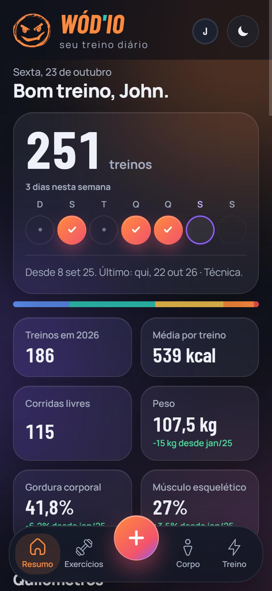
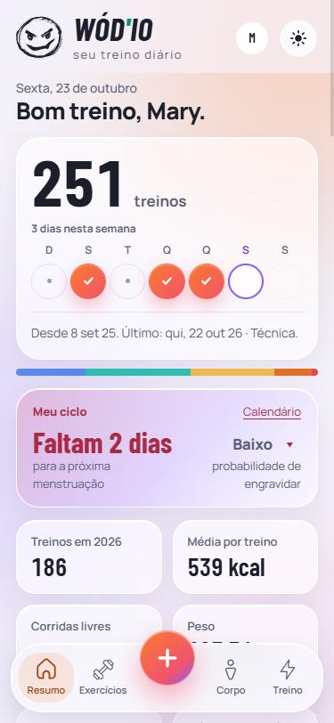
Primeiros passos
O WÓD'IO funciona no navegador do celular, mas fica melhor instalado como app, com ícone na tela inicial.
Primeiro acesso
- O acesso é por convite: o seu e-mail precisa estar liberado. Peça ao Davi.
- Abra o app, digite o e-mail convidado no campo E-mail e toque em Esqueci minha senha. Ainda não precisa de senha.
- Abra o e-mail que chegou (confira também o spam) e toque no link.
- O app abre na tela Nova senha. Crie a sua senha, repita e toque em Salvar nova senha. Pronto, você já está dentro.
- Preencha o perfil (nome, sexo, altura e nascimento). É com eles que o app calcula as zonas de frequência cardíaca e mostra o corpo certo no mapa muscular.
Nas próximas vezes, é só Entrar com o e-mail e a senha. Esqueceu a senha? Faça o mesmo caminho do Esqueci minha senha.
Instalar no celular
- iPhone (Safari): toque em Compartilhar e depois em Adicionar à Tela de Início.
- Android (Chrome): toque nos três pontinhos do navegador e em Adicionar à tela inicial (ou Instalar app).
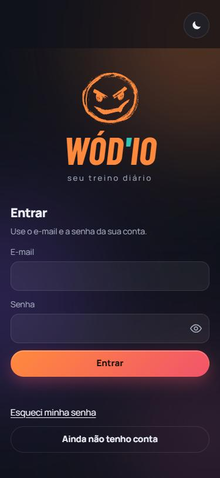
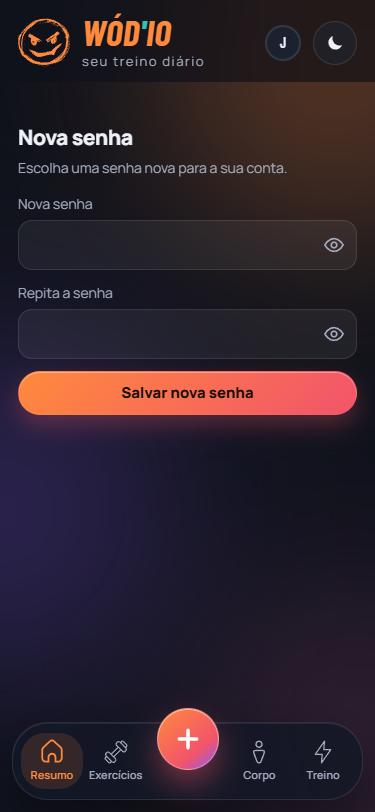
Tela inicial (Resumo)
É a primeira tela que aparece. De cima para baixo:
- O placar: o total de treinos e a semana em bolinhas. Bolinha laranja com ✓ é dia treinado, ponto cinza é descanso e a bolinha roxa é hoje.
- Último treino: desde quando você registra e qual foi o último.
- Indicadores: treinos no ano, média de kcal por treino, corridas, peso, gordura e músculo, com a diferença desde a primeira avaliação.
- Quilômetros: tudo o que você correu, somando as corridas livres e a corrida dentro dos treinos.
- Carga em alta: os exercícios em que a sua carga mais subiu (ex.: Clean de 12 para 48 kg).
Depois de treinar, a saudação muda para "Tá pago hoje". Se você começou a anotar um treino e saiu sem salvar, ele aparece aqui como não salvo para você continuar.
Na barra de baixo ficam as quatro áreas (Resumo, Exercícios, Corpo e Treino) e o botão + do meio, que registra um treino.
No topo, ao lado da sua foto, o botão da lua (ou do sol) troca entre o tema escuro e o tema claro. Toque de novo para voltar.
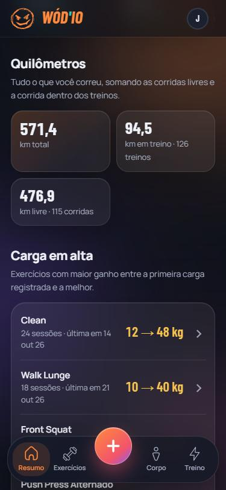
Adicionar um treino
Toque no + no meio da barra (no computador, o botão Registrar treino ou a tecla N). Primeiro escolha a data e o horário. Pode ser um dia que já passou, só não pode ser no futuro. Depois escolha o tipo:
- Crossfit & Hyrox: monte o treino em blocos (Warm up, Skill, WOD).
- Musculação: os seus treinos A, B, C…, série por série.
- Outros treinos: corrida, caminhada, bicicleta, aerobic e outras atividades.
- Colar texto: o jeito mais rápido. Cole o treino do grupo do box e pronto.
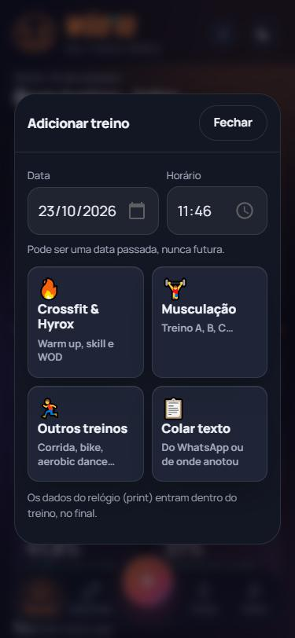
Colar texto (o mais rápido)
Se o seu box manda o treino do dia por WhatsApp, você não precisa digitar nada.
- Copie o texto do treino no WhatsApp (ou de onde você anotou).
- No app, toque em + → Colar texto e no botão Colar. Pode colar o treino e o monitoramento do relógio juntos. Calendário, pré-treino e refeições são ignorados.
- Se quiser, toque em Anexar print do relógio: o app lê os números da imagem ali no celular, e a foto não fica salva.
- Toque em Ler texto. O app separa os blocos, os exercícios, as repetições e as cargas.
- Confira a prévia. Exercício com nome novo aparece marcado: escolha o nome que já existe (se for o mesmo movimento escrito diferente) ou deixe como novo. Toque em Salvar treino.
Esquemas como 21-15-9 são entendidos: cada exercício recebe a soma das repetições.
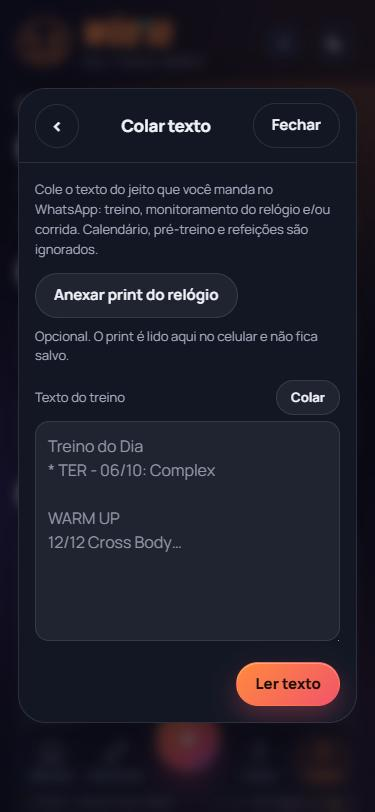
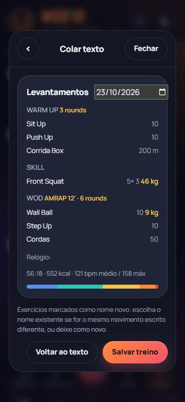
Crossfit & Hyrox
O editor segue a estrutura da aula:
- Categoria: Membros Inferiores, Puxadores, Cardio… Dá para somar mais de uma (ex.: Push & Pull = Puxadores + Empurradores) e dar um nome ao treino ("Fran", "Death Burpee").
- Blocos: Warm up, Skill e WOD. O bloco que não teve na aula pode ser marcado como não teve. Precisa de mais? Use + SKILL II ou + WOD II.
- Formato do bloco: AMRAP, EMOM, For Time e Mais formatos (Tabata, intervalado, chipper). Coloque o resultado: rounds, tempo, reps.
- Exercícios: toque em + exercício para adicionar e no exercício para editar. Segure o ≡ e arraste para trocar de ordem ou de bloco.
Terminou? FINALIZAR TREINO. Ainda está no box? Continuar depois guarda o treino como "em andamento".
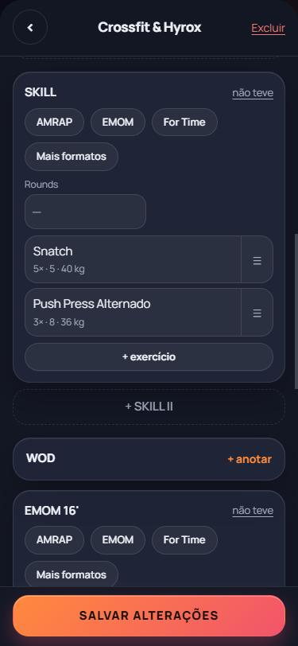
Exercício, modos e progressão
Ao adicionar um exercício, a busca mostra primeiro os Recentes. Se você já fez aquele exercício, aparece o cartão Da última vez com a data, o que foi feito e o seu recorde. O botão Repetir preenche tudo igual.
Escolha como ele foi feito:
- Padrão: carga, repetições, metros, tempo e séries.
- Progressão: para quando a carga muda a cada série (ex.: subir a carga do Snatch). Cada linha é uma série com Carga e Repetições. O + série já vem com os valores da anterior, é só ajustar.
- Alternado e Unilateral: repetições separadas por lado (D e E).
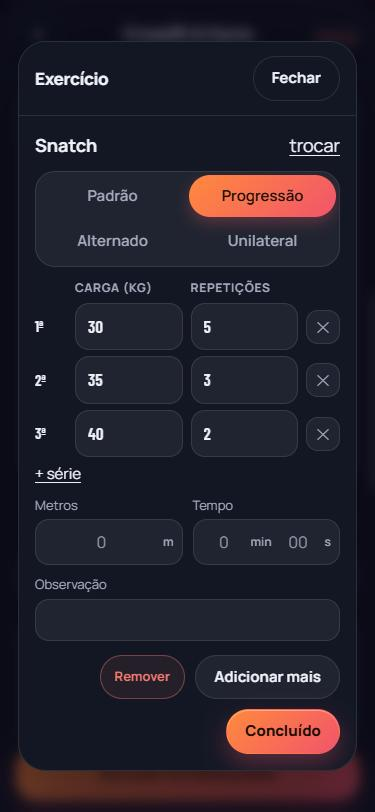
Musculação
Aqui você cria os seus treinos fixos (A, B, C…) uma vez e só preenche as séries no dia.
- Toque em + → Musculação e escolha o treino. Use + Novo treino para montar outro ou Editar para mudar os exercícios.
- Os valores vêm da última vez que você fez aquele treino. Ajuste a carga e as repetições de cada série.
- Aparelho ocupado? Marque não realizado. Fez algo a mais? + exercício, no topo ou no fim da lista.
- FINALIZAR TREINO salva. Continuar depois guarda para terminar mais tarde.
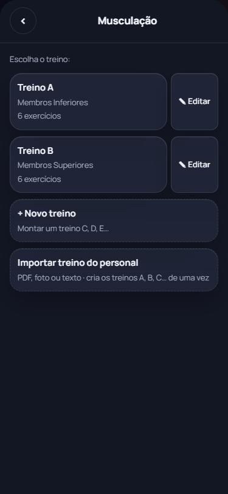
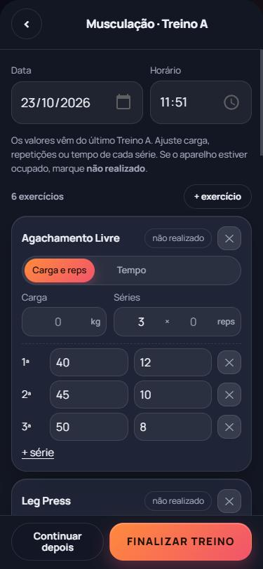
Corrida e outros treinos
Para corrida, caminhada, bicicleta, aerobic e qualquer outra atividade. Os tipos que você mais usa aparecem primeiro, e o resto fica em Mais atividades.
- Preencha a duração e a distância. O ritmo médio é calculado sozinho.
- Os dados do relógio são opcionais: Anexar print do relógio ou Digitar dados.
- Corridas livres entram nos Quilômetros e no seu ritmo médio. O app avisa quando sai a corrida mais longa ou o melhor ritmo.
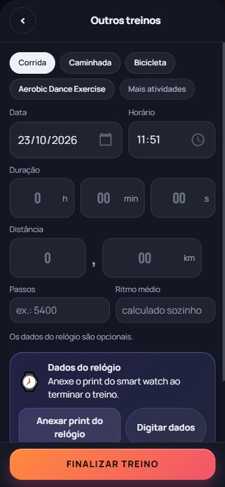
Tá pago
Ao finalizar, aparece a tela de conclusão com:
- quantos dias você treinou na semana, com o dia de hoje acendendo;
- uma frase curta (cada dia uma);
- exercícios, tempo e kcal do treino;
- o resultado do WOD;
- Recorde novo, quando alguma carga passou o seu melhor anterior, com quanto subiu.
Dali você pode Compartilhar, Ver treino ou Fechar. Sem internet? O treino fica salvo no aparelho e sincroniza sozinho quando a internet voltar.
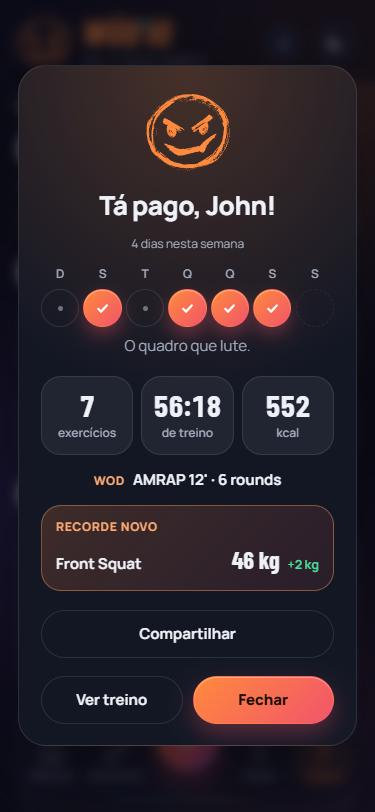
Compartilhar o treino
Na tela de conclusão ou em qualquer treino do histórico, toque em Compartilhar. O app monta um card com o logo, a data e os números do treino. O seu nome não aparece.
- Formato: Stories 9:16 ou Feed 3:4.
- Fundo: o fundo do app ou Sua foto. Com foto, arraste a prévia para enquadrar e use a pinça ou o Zoom para aproximar.
- O que aparece: ligue ou desligue kcal, tempo, exercícios, FC média, WOD, recorde e semana.
- Toque em Compartilhar para mandar direto no WhatsApp ou no Instagram, ou em Baixar para salvar a imagem.
A imagem é montada no seu aparelho. A foto não é enviada nem salva.
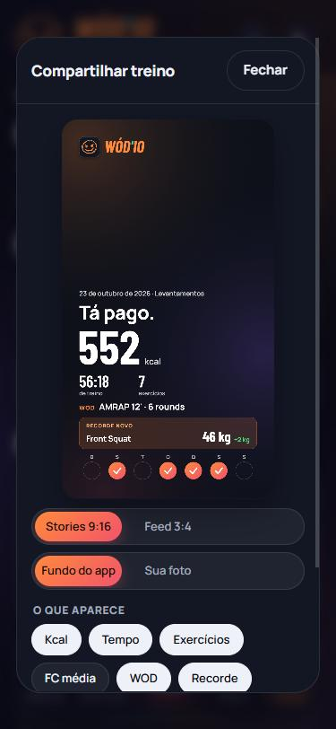
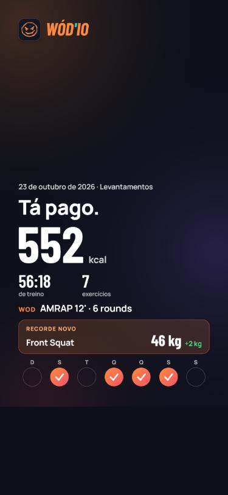
Histórico de treinos
Na aba Treino ficam todos os registros.
- Veja Por período (mês ou ano, com as setas) ou Por tipo de treino. Filtre pela categoria e por Tudo, Treinos ou Corridas.
- No topo, o total do período: treinos, corridas, km e kcal.
- Toque num treino para abrir. Treinos com recorde de carga levam o selo PR.
- Aberto, você tem Compartilhar e Editar. Nos ⋯ estão Copiar treino, Exportar .txt, Anexar print (na corrida) e Excluir.
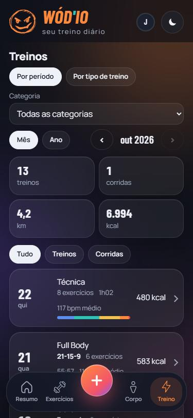
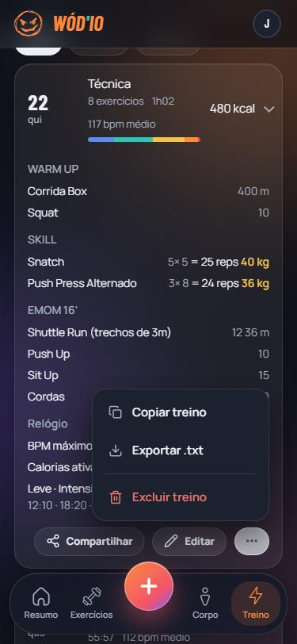
Exercícios e recordes
A aba Exercícios junta tudo o que você já fez:
- Grupos: Membros Inferiores, Puxadores, Cardio… com quantos treinos de cada.
- Lista: busque pelo nome e ordene por A-Z, Mais feitos, Mais repetições, Maior carga ou Mais recentes.
- Detalhe do exercício: o recorde e a data, quanto subiu desde a primeira vez, total de repetições e sessões, e o gráfico de carga e volume em 3 meses, 6 meses, 1 ano ou tudo.
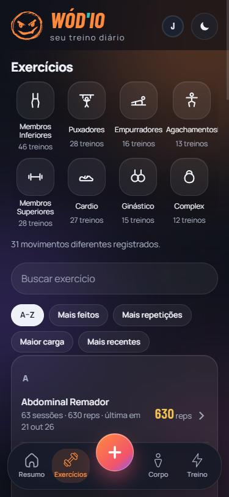
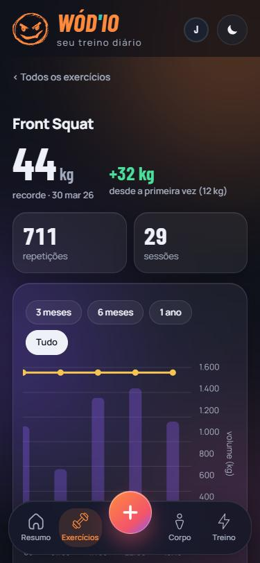
Corpo e bioimpedância
Grupos musculares
O mapa mostra quanto cada músculo foi trabalhado no período (Hoje, 7 dias, 30 dias…), em séries e em porcentagem do total. Quanto mais laranja, mais trabalhado.
Tem versão masculina e feminina: o app mostra o corpo de acordo com o sexo do seu perfil.
Bioimpedância
Peso, músculo, gordura, IMC, gordura visceral, metabolismo basal e medidas, sempre com a diferença desde a primeira avaliação e a faixa de referência.
Nova avaliação pela foto do laudo
- Em Corpo, toque em Nova avaliação.
- Toque em Ler foto do laudo e tire ou escolha a foto da balança (InBody, Omron, Tanita, Xiaomi ou relatório de nutricionista).
- O app preenche os campos e a data e marca em laranja o que leu. Confira e toque em Salvar avaliação.
A foto é lida no próprio celular e não fica salva. Valores de referência ("peso ideal", "alvo") são ignorados.
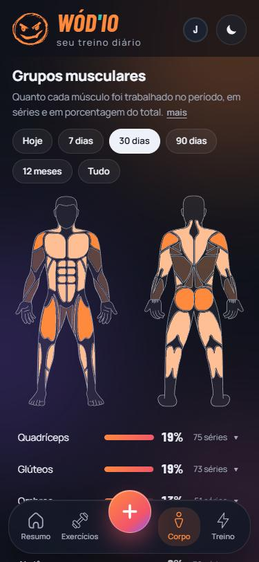
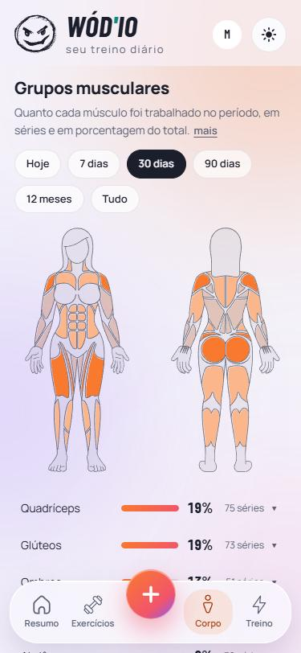

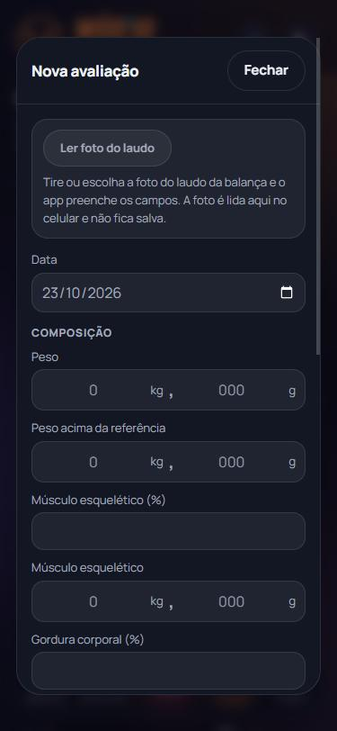
Meu ciclo
No perfil feminino, a tela inicial ganha o cartão Meu ciclo, com quantos dias faltam para a próxima menstruação e a probabilidade de engravidar no dia.
- No Calendário, marque o início da menstruação e veja o período previsto, o período fértil e a ovulação.
- Em Anotações, registre o dia: o fluxo, os medicamentos e a relação sexual, marcando se foi protegida ou desprotegida e quantas vezes.
Gravidez
Em Conta → Meu ciclo, ligue Estou grávida e informe as semanas e os dias de gestação de hoje. As previsões de menstruação ficam pausadas, o app avança a gestação sozinho a cada dia e o cartão da tela inicial passa a mostrar as semanas e o tamanho do bebê.
Não menstrua, por exemplo na menopausa ou com medicamentos que interrompem o ciclo? Em Conta → Meu ciclo, desligue Acompanhar meu ciclo. O cartão sai da tela inicial e os seus registros continuam guardados.
Em caso de dúvidas, consulte o seu ginecologista.
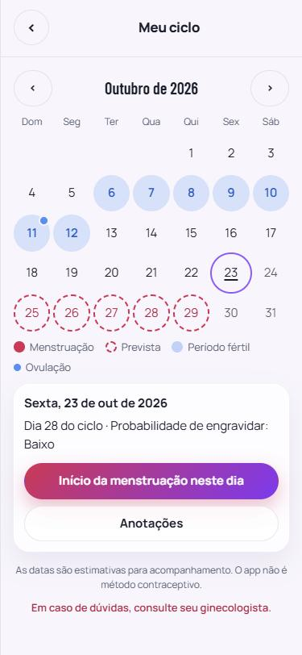
Conta, Strava e backup
Toque na sua foto (ou inicial), no canto de cima, para abrir a Conta:
- Como usar o WÓD'IO (no fim, antes do Sair): abre este manual.
- Perfil: nome, foto, sexo, altura e nascimento.
- Dados: Baixar backup gera um arquivo com todos os seus treinos, corridas e avaliações. Além disso, o sistema guarda uma cópia toda madrugada e mantém os últimos 30 dias.
- Notificações: liga e desliga O chamado das 5h.
- Strava Beta teste Conecte a sua conta para trazer tempo, kcal e batimentos do relógio para os treinos com Sincronizar com o Strava. Apenas 10 vagas disponíveis no total.
O botão da lua, no topo, troca entre o tema escuro e o claro.

O chamado das 5h
Todo dia, às 5h da manhã, o horário dos guerreiros, o WÓD'IO manda uma notificação com uma frase para tirar você da cama, sempre terminando em BORA TREINAR! Cada dia vem uma frase diferente, e algumas têm versão masculina e feminina, de acordo com o seu perfil.
Como ativar
- Ao abrir o app, aparece o convite O chamado das 5h. Toque em ATIVAR.
- O celular pergunta se o WÓD'IO pode enviar notificações. Toque em Permitir. Sem essa autorização, a notificação não chega.
- Pronto: amanhã às 5h chega a primeira.
- Agora não: o convite volta no dia seguinte.
- Nunca permitir: o app não pergunta mais. Dá para ativar quando quiser em Conta → Notificações.
- Para desligar: em Conta → Notificações, desligue a chave Chamado das 5h.
WÓD'IOagora
Inha, inha, inha, olha a pelanquinha. BORA TREINAR!
Dúvidas rápidas
Esqueci de registrar ontem. Dá para lançar depois?
Dá. Em qualquer registro, escolha a data e o horário no começo. Só não vale data no futuro.
Fiquei sem internet no box. Perdi o treino?
Não. O treino fica salvo no aparelho e sincroniza sozinho quando a internet voltar.
Saí do app no meio do registro.
O que você estava anotando aparece na tela inicial como não salvo, ou como em andamento se você tocou em Continuar depois. É só tocar para continuar.
O exercício entrou com nome diferente ("Front Squat" e "Agachamento frontal").
Na prévia do Colar texto, escolha o nome que já existe quando for o mesmo movimento. Assim a evolução e os recordes ficam juntos.
Como edito a carga de um treino antigo?
Na aba Treino, abra o treino, toque em Editar, ajuste e salve. Os recordes e os gráficos se recalculam sozinhos.
Apaguei um treino sem querer.
Toque em Desfazer no aviso que aparece logo depois. Passou do tempo? O backup automático guarda os últimos 30 dias: fale com o Davi.
Sou personal. Como passo o treino para o aluno?
Mande o treino em PDF, foto ou texto. O aluno entra em Musculação → Importar treino do personal, e o app cria os treinos A, B, C… de uma vez.